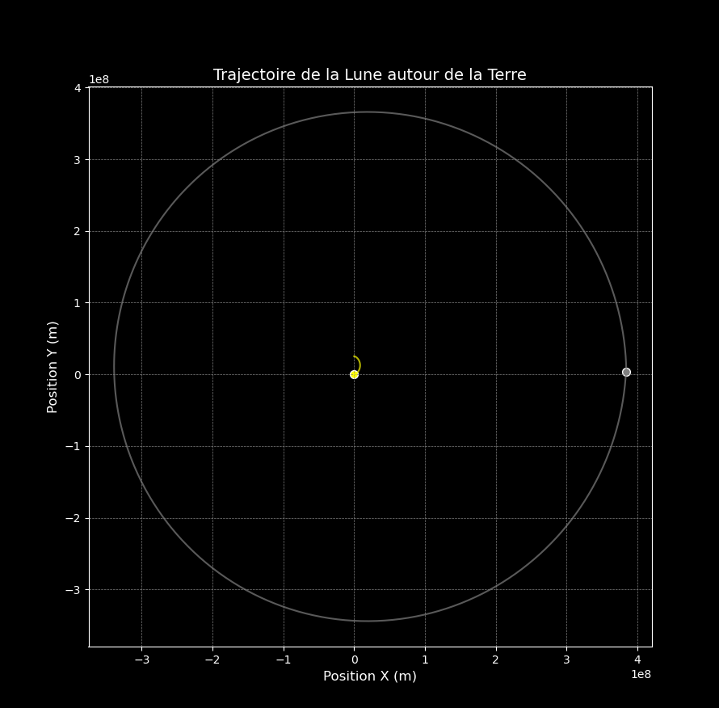

Problème N-corps
Télécharger le Rapport PDF (Français)Ce projet a été réalisé sur une durée de 2 mois et demi dans le cadre de ma formation en informatique au sein de l'école Polytechnique Universitaire de Lyon.
Introduction
Le problème N-corps est un problème classique en mécanique céleste qui consiste à décrire le mouvement de N corps sous l'influence de la gravité. Ce projet vise à modéliser ce problème en utilisant des méthodes numériques avancées.
Méthodologie
Nous avons crée plusieurs classes d'objet en C++ orientée objet pour modéliser les corps et leurs interactions gravitationnelles. Nous avons crée les classes : coordonées, Vecteur et point matériel. Nous avons ensuite résolu le problème à N-corps en modélisans chaque planetes et astres par des points matériels.
Résultats
Les résultats de la simulation montrent le comportement dynamique des corps célestes au fil du temps. Nous avons tracés la trajectoire de la Lune autour de la Terre.
 Et ensuite nous avons tracé la trajectoire de notre système solaire autour de notre soleil.